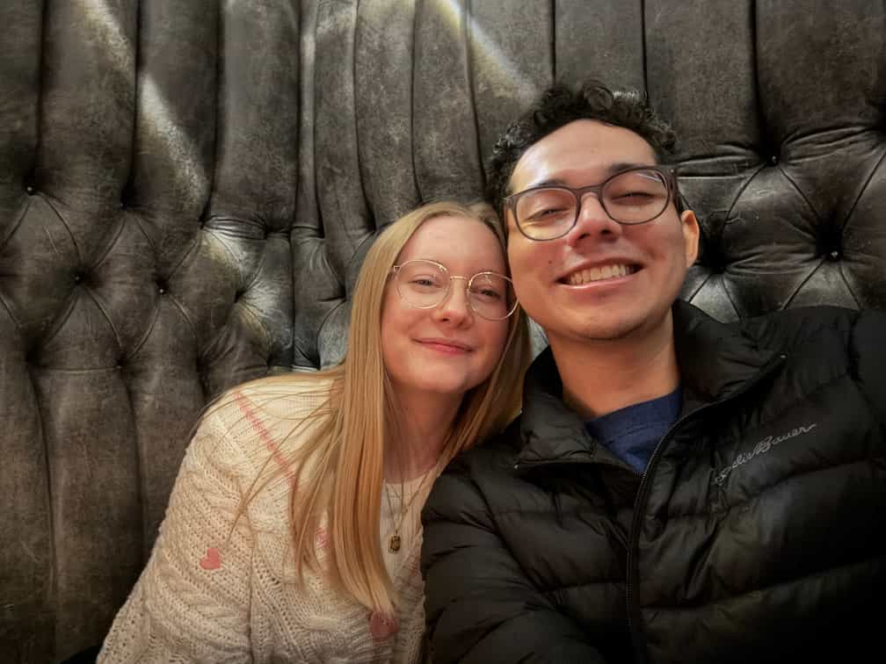

Israel Isaí Barrios Martínez | WDD 130
Hello, my name is Isaí and that is my beautiful wife Brieanna, we live in Salt Lake City
Utah in the United States.
I love Pokemon, movies and technology; I got to marry my
best friend which makes me the luckiest person in the world; I am a member of the church
of Jesus Christ of latter day saints; This is me in a nutshell.
Welcome to my
website.